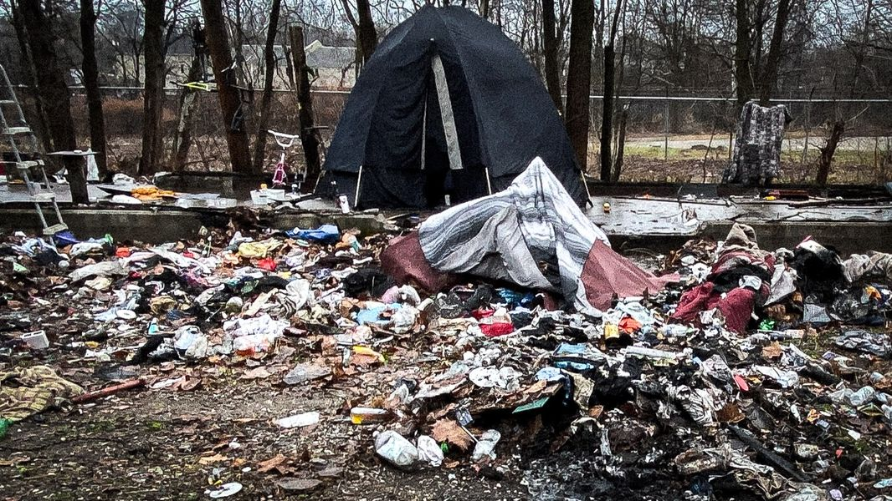

Timeline photos
TINY HOUSES COMING FOR HOMELESS PEOPLE IN AKRON, OHIO. Part 4/5
Drugs and Trash
I believe in talking about things. All things, no matter how rude and seemingly ignorant.
I’m fine with anyone saying anything they want about homeless people. It provides an opportunity to address a topic that many people think about but are too afraid to discuss.
Yesterday, a commenter said that he felt taxpayers shouldn’t pay for housing for a bunch of homeless people who have chosen to be homeless.
That’s a great topic. It asks 2 really important questions:
* What should taxes pay for?
* Are homeless people just choosing to be homeless?
People bristle at this question usually because it is often presented in a really harsh way. But that doesn’t mean it isn’t a valid question to discuss.
Today, I want to talk about 2 issues that I see come up over and over again: homeless people using drugs and making a bunch of trash that they don’t clean up.
The picture I used for this post is of a camp that exists right now. It’s a total mess. They have burn barrels. Why don’t they just burn all their trash and scrap the metal?
I think the most straightforward answer is mental illness and depression.
As an auctioneer, I have encountered countless homes overrun by hoarding. I’m talking about only being able to stand at the front door because it is physically impossible to climb through the rotting food, dishes, and waist-deep garbage. I’ve seen overflowing toilets, swarming bugs, flies, rats, mice, and cockroaches.
Life overwhelms many people. It’s brutal out here. You know that.
Now imagine you have lost everything. Your home is gone. Your family is dead. You truly have lost everything. Now you live under a tarp because people have either destroyed, stolen, or burned down the last 3 tents you acquired. Can you empathize a little about why tidying up your camp might not be at the top of your list of things to get done today?
I spend a lot of mental energy trying to understand why people act the way they do. This doesn’t mean we should just accept everyone’s actions, but I usually can understand why they are doing what they are doing. It almost always makes sense.
If you choose to live in a structured camp or village, you agree to its rules. If you don’t adhere to them, you must leave.
Over the two years it ran, hundreds of people moved through our tent village. Many people could handle the rules, and many couldn’t.
One rule we had was that you were not allowed to go to the bathroom outside. No exceptions.
An old, nearly blind, Black man moved into a tent. He wouldn’t stop peeing outside his tent at night because he couldn’t see to walk to the porta potty. We kicked him out.
We kicked people out all the time. The rules must be followed in these kinds of villages. It is the only way they will succeed.
I believe there need to be very clear rules for this pilot tiny house program. These could be good initial rules:
* Bank $300/month for your upcoming house.
* No drugs.
* No trash lying around.
* Keep your tiny house clean and tidy.
* Be actively engaged with a housing plan.
* Get a mental health assessment and follow the program prescribed.
* No physical violence.
* No stealing.
Any violation of these rules can result in either a remediation program or immediate removal from the village.
You absolutely can find homeless people who will keep things clean and tidy. Usually, it is just one or two people that cause all the hoarding and trash pile up. You would be amazed at how much junk one tiny woman can collect in just one night of scavenging. It’s truly unbelievable.
Most people don’t like living in an open-air dumpster.
I also believe that this initial program must be drug-free. Homeless people will often tell you that drugs didn’t make them homeless, but they did keep them homeless. You are going to have a much higher success rate of people transitioning into traditional housing if they aren’t using drugs. ANY drugs other than what a doctor prescribed.
You can be kind and compassionate to the people in this program. You don’t need to be a jerk. But the rules are the rules.
The number one priority of this tiny house project is for it to be successful by whatever metrics are established.
It will gut you to the bone to throw a senior citizen out on the street with nowhere to sleep because they keep leaving dirty dishes outside their door. But you must do it if the program is to succeed. It is absolutely critical this initial program succeeds so we can grow it and get to the future of what a complete homeless housing and sheltering system can become, which is what I’ll finish up this series discussing tomorrow.
Here are the 5 parts of this series:
Part1:
https://www.facebook.com/sagelewis71/posts/pfbid02qdKpvQUokYjhNCQFB2vNwZMu23jEP1GyEjPJX3b3NgmRsJPb2TcmWn1q6cGnCepml
Part 2:
https://www.facebook.com/sagelewis71/posts/pfbid0VJBepBsDjhvVsq5VPpxJi4Q1Y9Bkd3jFLkBj98bhy27r7wKWSZUBz3EH9M3MF1Ecl
Part 3:
https://www.facebook.com/sagelewis71/posts/pfbid0yGif9DxrXXMBefQ4FQKAQSmgTnwxebYGHituxAdShb1AEcdghkrB8NDzhBZqkTdNl
Part 4:
https://www.facebook.com/sagelewis71/posts/pfbid0YURT3Kk7jmH5PDh5a7eurrtAWWehbjUx3ZMh9RzK2ic3i9AgzzUJMHjKo8iuhohXl
Part 5:
https://www.facebook.com/sagelewis71/posts/pfbid0moxWt4AuDaKUYfdQZ6QjaSpr66gFv8j6oD8Uav2MptGiZ9mxBKyq1aXGQSp5N9qdl